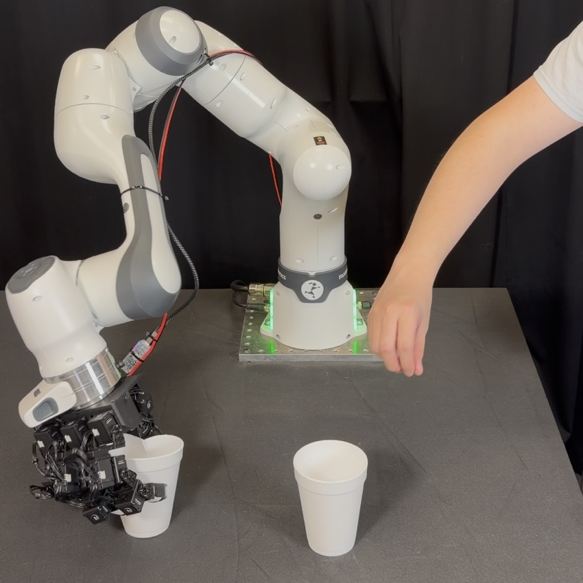
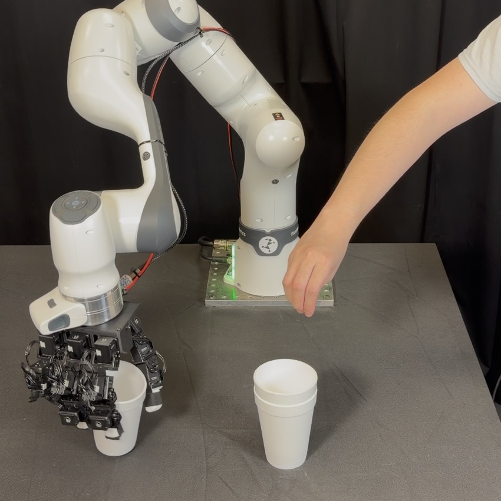

Teleoperation
Foam-Cup Stacking
Current-conditioned compliance reference prediction reduces object damage while preserving fast teleoperation.
w/o Current15.0%
novice cup deformation
w/ Current0.0%
novice cup deformation

